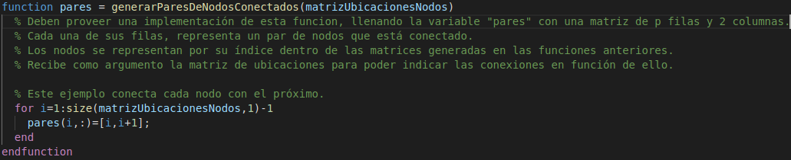
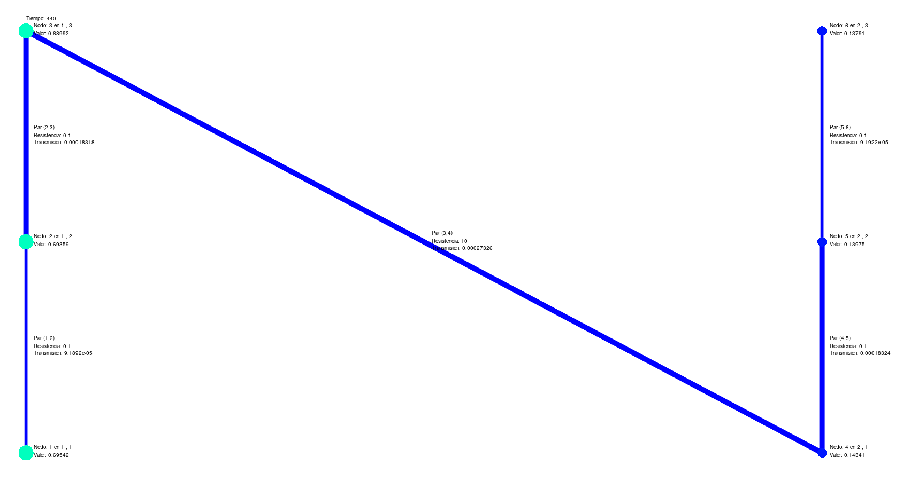
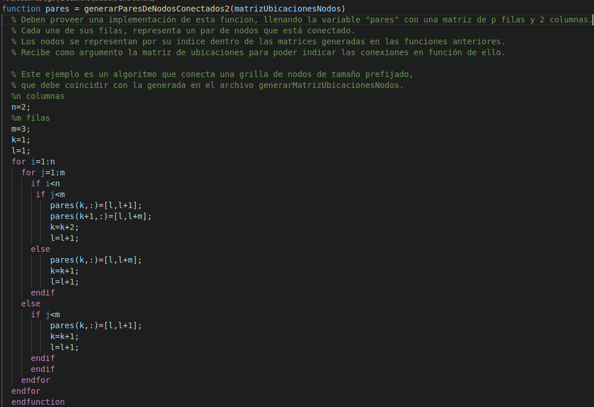
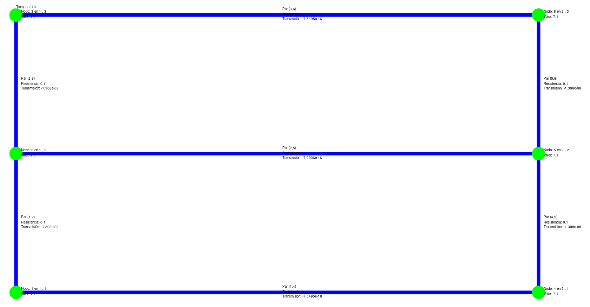

Esta funcion debe generar una matriz de p filas y 2 columnas.
Cada una de sus filas, representa un par de nodos que está conectado.
Los nodos se representan por su índice dentro de las matrices generadas en las funciones anteriores.
Recibe como argumento la matriz de ubicaciones para poder indicar las conexiones en función de ello.
Lugar desde donde se la llama: Linea 45 del archivo TableroQuimico.m
Ejemplo archivo generarParesDeNodosConectados.m:
Ejemplo matriz de salida del archivo generarParesDeNodosConectados.m en el ejemplo inicial:
M = [1, 2; 2, 3; 3, 4; 4, 5; 5, 6]
Ejemplo archivo generarParesDeNodosConectados2.m:
Ejemplo matriz de salida del archivo generarParesDeNodosConectados2.m:
M = [1, 2; 1, 4; 2, 3; 2, 5; 3, 6; 4, 5; 5, 6]
